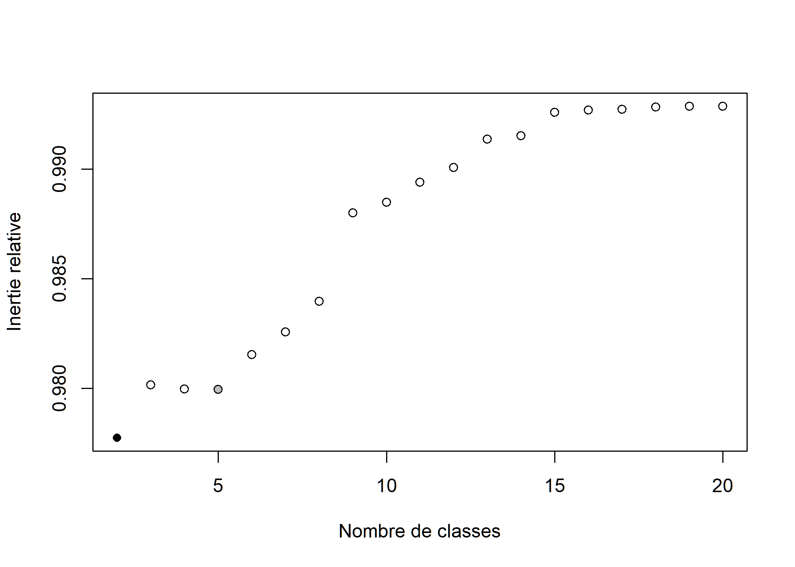

Classification ascendante hiérarchique (CAH)
Il existe de nombreuses techniques statistiques visant à partinionner une population en différentes classes ou sous-groupes. La classification ascendante hiérarchique (CAH) est l’une d’entre elles. On cherche à ce que les individus regroupés au sein d’une même classe (homogénéité intra-classe) soient le plus semblables possibles tandis que les classes soient le plus dissemblables (hétérogénéité inter-classe).
Le principe de la CAH est de rassembler des individus selon un critère de ressemblance défini au préalable qui s’exprimera sous la forme d’une matrice de distances, exprimant la distance existant entre chaque individu pris deux à deux. Deux observations identiques auront une distance nulle. Plus les deux observations seront dissemblables, plus la distance sera importante. La CAH va ensuite rassembler les individus de manière itérative afin de produire un dendrogramme ou arbre de classification. La classification est ascendante car elle part des observations individuelles ; elle est hiérarchique car elle produit des classes ou groupes de plus en plus vastes, incluant des sous-groupes en leur sein. En découpant cet arbre à une certaine hauteur choisie, on produira la partition désirée.
On trouvera également de nombreux supports de cours en français sur la CAH sur le site de François Gilles Carpentier : http://pagesperso.univ-brest.fr/~carpenti/.
Calculer une matrice des distances
La notion de ressemblance entre observations est évaluée par une distance entre individus. Plusieurs type de ditances existent selon les données utilisées.
Il existe de nombreuses distances mathématiques pour les variables quantitatives (euclidiennes, Manhattan…) que nous n’aborderons pas ici1. La plupart peuvent être calculées avec la fonction dist.
Usuellement, pour un ensemble de variables qualitatives, on aura recours à la distance du Φ² qui est celle utilisée pour l’analyse des correspondances multiples (voir le chapitre dédié). Avec l’extension ade4, la distance du Φ² s’obtient avec la fonction dist.dudi2. Le cas particulier de la CAH avec l’extension FactoMineR sera abordée dans une section spécifique ci-après. Nous évoquerons également la distance de Gower qui peut s’appliquer à un ensemble de variables à la fois qualitatives et quantitatives et qui se calcule avec la fonction daisy de l’extension cluster. Enfin, dans le chapitre sur l’analyse de séquences, nous verrons également la fonction seqdist (extension TraMineR) permettant de calculer une distance entre séquences.
Distance de Gower
En 1971, Gower a proposé un indice de similarité qui porte son nom3. L’objectif de cet indice consiste à mesurer dans quelle mesure deux individus sont semblables. L’indice de Gower varie entre 0 et 1. Si l’indice vaut 1, les deux individus sont identiques. À l’opposé, s’il vaut 0, les deux individus considérés n’ont pas de point commun. Si l’on note Sg l’indice de similarité de Gower, la distance de Gower Dg s’obtient simplement de la manière suivante : Dg = 1 - Sg. Ainsi, la distance sera nulle entre deux individus identiques et elle sera égale à 1 entre deux individus totalement différents. Cette distance s’obtient sous R avec la fonction daisy du package cluster.
L’indice de similarité de Gower entre deux individus x1 et x2 se calcule de la manière suivante :
p représente le nombre total de caractères (ou de variables) descriptifs utilisés pour comparer les deux individus4. s12j représente la similarité partielle entre les individus 1 et 2 concernant le descripteur j. Cette similarité partielle se calcule différemment s’il s’agit d’une variable qualitative ou quantitative :
- variable qualitative : s12j vaut 1 si la variable j prend la même valeur pour les individus 1 et 2, et vaut 0 sinon. Par exemple, si 1 et 2 sont tous les deux « grand », alors s12j vaudra 1. Si 1 est « grand » et 2 « petit », s12j vaudra 0.
- variable quantitative : la différence absolue entre les valeurs des deux variables est tout d’abord calculée, soit |y1j − y2j|. Puis l’écart maximum observé sur l’ensemble du fichier est déterminé et noté Rj. Dès lors, la similarité partielle vaut S12j = 1 - |y1j − y2j| / Rj.
Dans le cas où l’on n’a que des variables qualitatives, la valeur de l’indice de Gower correspond à la proportion de caractères en commun. Supposons des individus 1 et 2 décris ainsi :
- homme / grand / blond / étudiant / urbain
- femme / grande / brune / étudiante / rurale
Sur les 5 variables utilisées pour les décrire, 1 et 2 ont deux caractéristiques communes : ils sont grand(e)s et étudiant(e)s. Dès lors, l’indice de similarité de Gower entre 1 et 2 vaut 2/5 = 0,4 (soit une distance de 1 − 0,4 = 0,6).
Plusieurs approches peuvent être retenues pour traiter les valeurs manquantes :
- supprimer tout individu n’étant pas renseigné pour toutes les variables de l’analyse ;
- considérer les valeurs manquantes comme une modalité en tant que telle ;
- garder les valeurs manquantes en tant que valeurs manquantes.
Le choix retenu modifiera les distances de Gower calculées. Supposons que l’on ait :
- homme / grand / blond / étudiant / urbain
- femme / grande / brune / étudiante / manquant
Si l’on supprime les individus ayant des valeurs manquantes, 2 est retirée du fichier d’observations et aucune distance n’est calculée.
Si l’on traite les valeurs manquantes comme une modalité particulière, 1 et 2 partagent alors 2 caractères sur les 5 analysés, la distance de Gower entre eux est alors de 1 − 2/5 =1 − 0,4 = 0,6.
Si on garde les valeurs manquantes, l’indice de Gower est dès lors calculé sur les seuls descripteurs renseignés à la fois pour 1 et 2. La distance de Gower sera calculée dans le cas présent uniquement sur les 4 caractères renseignés et vaudra 1 − 2/4 = 0,5.
Distance du Φ²
Il s’agit de la distance utilisée dans les analyses de correspondance multiples (ACM). C’est une variante de la distance du χ². Nous considérons ici que nous avons Q questions (soit Q variables initiales de type facteur). À chaque individu est associé un patron c’est-à-dire une certaine combinaison de réponses aux Q questions. La distance entre deux individus correspond à la distance entre leurs deux patrons. Si les deux individus présentent le même patron, leur distance sera nulle. La distance du Φ² peut s’exprimer ainsi :
où Li et Lj sont deux patrons, Q le nombre total de questions. δik vaut 1 si la modalité k est présente dans le patron Li, 0 sinon. fk est la fréquence de la modalité k dans l’ensemble de la population.
Exprimé plus simplement, on fait la somme de l’inverse des modalités non communes aux deux patrons, puis on divise par le nombre total de question. Si nous reprenons notre exemple précédent :
- homme / grand / blond / étudiant / urbain
- femme / grande / brune / étudiante / rurale
Pour calculer la distance entre 1 et 2, il nous faut connaître la proportion des différentes modalités dans l’ensemble de la population étudiée. En l’occurrence :
- hommes : 52 % / femmes : 48 %
- grand : 30 % / moyen : 45 % / petit : 25 %
- blond : 15 % / châtain : 45 % / brun : 30 % / blanc : 10 %
- étudiant : 20 % / salariés : 65 % / retraités : 15 %
- urbain : 80 % / rural : 20 %
Les modalités non communes entre les profils de 1 et 2 sont : homme, femme, blond, brun, urbain et rural. La distance du Φ² entre 1 et 2 est donc la suivante :
Cette distance, bien que moins intuitive que la distance de Gower évoquée précédemment, est la plus employée pour l’analyse d’enquêtes en sciences sociales. Il faut retenir que la distance entre deux profils est dépendante de la distribution globale de chaque modalité dans la population étudiée. Ainsi, si l’on recalcule les distances entre individus à partir d’un sous-échantillon, le résultat obtenu sera différent. De manière générale, les individus présentant des caractéristiques rares dans la population vont se retrouver éloignés des individus présentant des caractéristiques fortement représentées.
Exemple
Nous allons reprendre l’ACM calculée avec dudi.acm (ade4) dans le chapitre consacré à l’ACM :
library(questionr)
data(hdv2003)
d <- hdv2003
d$grpage <- cut(d$age, c(16, 25, 45, 65, 93), right = FALSE,
include.lowest = TRUE)
d$etud <- d$nivetud
levels(d$etud) <- c("Primaire", "Primaire", "Primaire", "Secondaire",
"Secondaire", "Technique/Professionnel", "Technique/Professionnel",
"Supérieur")
d2 <- d[, c("grpage", "sexe", "etud", "peche.chasse", "cinema",
"cuisine", "bricol", "sport", "lecture.bd")]
library(ade4)
acm <- dudi.acm(d2, scannf = FALSE, nf = 5)La matrice des distances s’obtient dès lors avec la fonction dist.dudi :
Calcul du dendrogramme
Il faut ensuite choisir une méthode d’agrégation pour construire le dendrogramme. De nombreuses solutions existent (saut minimum, distance maximum, moyenne, Ward…). Chacune d’elle produira un dendrogramme différent. Nous ne détaillerons pas ici ces différentes techniques5. Cependant, à l’usage, on privilégiera le plus souvent la méthode de Ward6. De manière simplifiée, cette méthode cherche à minimiser l’inertie intra-classe et à maximiser l’inertie inter-classe afin d’obtenir des classes les plus homogènes possibles. Cette méthode est souvent incorrectement présentée comme une méthode de minimisation de la variance
alors qu’au sens strict Ward vise l’augmentation mininum de la somme des carrés
(“minimum increase of sum-of-squares (of errors)”)7.
En raison de la variété des distances possibles et de la variété des techniques d’agrégation, on pourra être amené à réaliser plusieurs dendrogrammes différents sur un même jeu de données jusqu’à obtenir une classification qui fait « sens ».
La fonction de base pour le calcul d’un dendrogramme est hclust en précisant le critère d’agrégation avec method. Dans notre cas, nous allons opter pour la méthode de Ward appliquée au carré des distances (ce qu’on indique avec method = "ward.D2"8) :
Le temps de calcul d’un dendrogramme peut être particulièrement important sur un gros fichier de données. L’extension fastcluster permet de réduire significativement le temps de calcul. Il suffit d’installer puis d’appeler cette extension. La fonction hclust sera automatiquement remplacée par cette version optimisée. Elle prends les mêmes paramètres :
Le dendrogramme obtenu peut être affiché simplement avec plot. Lorsque le nombre d’individus est important, il peut être utile de ne pas afficher les étiquettes des individus avec labels=FALSE.
La fonction agnes de l’extension cluster peut également être utilisée pour calculer le dendrogramme. Cependant, à l’usage, elle semble être un peu plus lente que hclust.
ATTENTION : la méthode implémentée dans la fonction agnes correspond à l’option method = "ward.D2" de hclust.
Le résultat obtenu n’est pas au même format que celui de hclust. Il est possible de transformer un objet agnes au format hclust avec as.hclust.
Découper le dendrogramme
Pour obtenir une partition de la population, il suffit de découper le dendrogramme obtenu à une certaine hauteur. En premier lieu, une analyse de la forme du dendrogramme pourra nous donner une indication sur le nombre de classes à retenir. Dans notre exemple, deux branches bien distinctes apparaissent sur l’arbre.
Pour nous aider, nous pouvons représenter les sauts d’inertie du dendrogramme selon le nombre de classes retenues.
inertie <- sort(arbre$height, decreasing = TRUE)
plot(inertie[1:20], type = "s", xlab = "Nombre de classes", ylab = "Inertie")On voit trois sauts assez nets à 2, 5 et 8 classes, que nous avons représentés ci-dessous respectivement en vert, en rouge et en bleu.
plot(inertie[1:20], type = "s", xlab = "Nombre de classes", ylab = "Inertie")
points(c(2, 5, 8), inertie[c(2, 5, 8)], col = c("green3", "red3",
"blue3"), cex = 2, lwd = 3)La fonction rect.hclust permet de visualiser les différentes partitions directement sur le dendrogramme.
plot(arbre, labels = FALSE, main = "Partition en 2, 5 ou 8 classes",
xlab = "", ylab = "", sub = "", axes = FALSE, hang = -1)
rect.hclust(arbre, 2, border = "green3")
rect.hclust(arbre, 5, border = "red3")
rect.hclust(arbre, 8, border = "blue3")L’extension FactoMineR (que nous aborderons dans une section dédiée ci-après) suggère d’utiliser la partition ayant la plus grande perte relative d’inertie.
L’extension JLutils (disponible sur GitHub) propose une fonction best.cutree qui permet de calculer cette indicateur à partir de n’importe quel dendrogramme calculé avec hclust ou agnes.
Pour installer JLutils, on aura recours au package devtools et à sa fonction install_github :
Par défaut, best.cutree regarde quelle serait la meilleure partition entre 3 et 20 classes.
[1] 5En l’occurence il s’agirait d’une partition en 5 classes. Il est possible de modifier le minimum et le maximum des partitions recherchées avec min et max.
[1] 2On peut également représenter le graphique des pertes relatives d’inertie avec graph=TRUE. La meilleure partition selon ce critère est représentée par un point noir et la seconde par un point gris.

[1] 2Un découpage en deux classes minimise ce critère. Cependant, si l’on souhaite réaliser une analyse un peu plus fine, un nombre de classes plus élevé serait pertinent. Nous allons donc retenir un découpage en cinq classes. Le découpage s’effectue avec la fonction cutree.
Il existe de multiples autres indicateurs statistiques cherchant à mesurer la qualité
de chaque partition. Pour cela, on pourra par exemple avoir recours à la fonction as.clustrange de l’extension WeightedCluster.
Pour plus d’informations, voir le manuel de la librairie WeightedCluster, chapitre 7.
La typologie obtenue peut être représentée dans le plan factoriel avec s.class.
par(mfrow = c(1, 2))
library(RColorBrewer)
s.class(acm$li, as.factor(typo), col = brewer.pal(5, "Set1"),
sub = "Axes 1 et 2")
s.class(acm$li, as.factor(typo), 3, 4, col = brewer.pal(5, "Set1"),
sub = "Axes 3 et 4")
De nombreuses possibilités graphiques sont possibles avec les dendrogrammes. Des exemples documentés sont disponibles à cette adresse : http://rpubs.com/gaston/dendrograms.
Romain François a developpé une fonction A2Rplot permettant de réaliser facilement un dendrogramme avec les branches colorées9. Par commodité, cette fonction est disponible directement au sein de l’extension JLutils.
Pour réaliser le graphique, on indiquera le nombre de classes et les couleurs à utiliser pour chaque branche de l’arbre :
A2Rplot(arbre, k = 5, boxes = FALSE, col.up = "gray50", col.down = brewer.pal(5,
"Dark2"), show.labels = FALSE)On pourra aussi noter l’extension ggdendro pour représenter des dendrogrammes avec ggplot2 ou encore l’extension dendextend qui permet de manipuler, représenter et comparer des dendrogrammes10.
CAH avec l’extension FactoMineR
L’extension FactoMineR fournit une fonction HCPC permettant de réaliser une classification hiérarchique à partir du résultats d’une analyse factorielle réalisée avec la même extension (voir la section dédiée du chapitre sur l’ACM).
HCPC réalise à la fois le calcul de la matrice des distances, du dendrogramme et le partitionnement de la population en classes. Par défaut, HCPC calcule le dendrogramme à partir du carré des distances du Φ² et avec la méthode de Ward.
Par défaut, l’arbre est affiché à l’écran et l’arbre sera coupé selon la partition ayant la plus grande perte relative d’inertie (comme avec best.cutree). Utilisez graph=FALSE pour ne pas afficher le graphique et l’argument nb.clust pour indiquer le nombre de classes désirées.
library(FactoMineR)
acm2 <- MCA(d2[complete.cases(d2), ], ncp = 5, graph = FALSE)
cah <- HCPC(acm2, graph = FALSE)On pourra représenter le dendrogramme avec plot et l’argument choice="tree".
Il apparait que le dendrogramme obtenu avec HCPC diffère de celui que nous avons calculé précédemment en utilisant la matrice des distances fournies par dist.dudi. Cela est dû au fait que HCPC procède différement pour calculer la matrice des distances en ne prenant en compte que les axes retenus dans le cadre de l’ACM. Pour rappel, nous avions retenu que 5 axes dans le cadre de notre ACM :
HCPC n’a donc pris en compte que ces 5 premiers axes pour calculer les distances entre les individus, considérant que les autres axes n’apportent que du « bruit » rendant la classification instable. Cependant, comme le montre summary(acm2), nos cinq premiers axes n’expliquent que 54 % de la variance. Il usuellement préférable de garder un plus grande nombre d’axes afin de couvrir au moins 80 à 90 % de la variance11. De son côté, dist.dudi prends en compte l’ensemble des axes pour calculer la matrice des distances. On peut reproduire cela avec FactoMineR en indiquant ncp=Inf lors du calcul de l’ACM.
acm2 <- MCA(d2[complete.cases(d2), ], ncp = Inf, graph = FALSE)
cah <- HCPC(acm2, nb.clust = -1, graph = FALSE)On obtient bien cette fois-ci le même résultat.
D’autres graphiques sont disponibles, en faisant varier la valeur de l’argument choice :
L’objet renvoyé par HCPC contient de nombreuses informations. La partition peut notamment être récupérée avec cah$data.clust$clust. Il y a également diverses statistiques pour décrire les catégories.
**Results for the Hierarchical Clustering on Principal Components**
name
1 "$data.clust"
2 "$desc.var"
3 "$desc.var$test.chi2"
4 "$desc.axes$category"
5 "$desc.axes"
6 "$desc.axes$quanti.var"
7 "$desc.axes$quanti"
8 "$desc.ind"
9 "$desc.ind$para"
10 "$desc.ind$dist"
11 "$call"
12 "$call$t"
description
1 "dataset with the cluster of the individuals"
2 "description of the clusters by the variables"
3 "description of the cluster var. by the categorical var."
4 "description of the clusters by the categories."
5 "description of the clusters by the dimensions"
6 "description of the cluster var. by the axes"
7 "description of the clusters by the axes"
8 "description of the clusters by the individuals"
9 "parangons of each clusters"
10 "specific individuals"
11 "summary statistics"
12 "description of the tree" Pour une présentation de ces différentes distances, on pourra se référer à http://old.biodiversite.wallonie.be/outils/methodo/similarite_distance.htm ou encore à ce support de cours par D. Chessel, J. Thioulouse et A.B. Dufour disponible à http://pbil.univ-lyon1.fr/R/pdf/stage7.pdf.↩
Cette même fonction peut aussi être utilisée pour calculer une distance après une analyse en composantes principales ou une analyse mixte de Hill et Smith.↩
Voir Gower, J. (1971). A General Coefficient of Similarity and Some of Its Properties. Biometrics, 27(4), 857-871. doi:10.2307/2528823 (http://www.jstor.org/stable/2528823).↩
Pour une description mathématique plus détaillée de cette fonction, notamment en cas de valeur manquante, se référer à l’article original de Gower précédemment cité.↩
On pourra consulter le cours de FG Carpentier déjà cité ou bien des ouvrages d’analyse statistique.↩
Ward, J. (1963). Hierarchical Grouping to Optimize an Objective Function. Journal of the American Statistical Association, 58(301), 236-244. doi:10.2307/2282967. (http://www.jstor.org/stable/2282967)↩
Voir par exemple la discussion, en anglais, sur Wikipedia concernant la page présentant la méthode Ward : https://en.wikipedia.org/wiki/Talk:Ward%27s_method↩
Depuis la version 3.1 de R. L’option
method = "ward.D"correspondant à la version disponible dans les versions précédentes de R. Mais il est à noter que la méthode décrite par Ward dans son article de 1963 correspond en réalité àmethod = "ward.D2.↩Voir http://addicted2or.free.fr/packages/A2R/lastVersion/R/code.R.↩
Pour une présentation succincte, voir l’introduction de l’extension sur https://cran.r-project.org/web/packages/dendextend/vignettes/introduction.html (en anglais).↩
Voir http://factominer.free.fr/classical-methods/classification-hierarchique-sur-composantes-principales.html↩